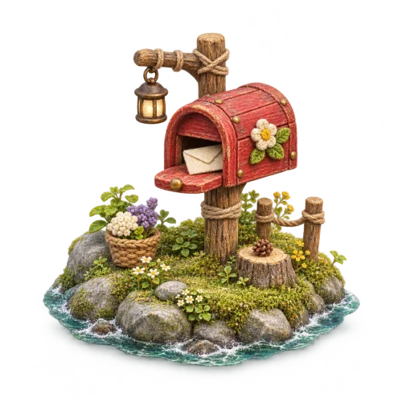

Substack, one to one
A diagnosis of your publication and a practical 30-day plan. First three places.
Let’s talk about your publicationwork with me
I'm a Chinese–English writer with an MA in Translation & Interpreting. I grew Kita-Sora from 0 to 500 subscribers in six weeks; today it reaches ~900 readers in 83 countries.

A diagnosis of your publication and a practical 30-day plan. First three places.
Let’s talk about your publication
Translation and localization, adapted to your voice and your audience.

Bios, about pages, product descriptions and newsletters.

A day-by-day itinerary, with food, transport and room for a slower detour.